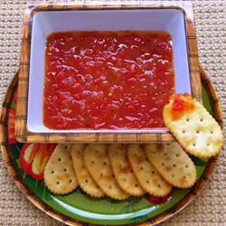

Indian Relish

Description
Spread cream cheese on your favorite crackers and top with this zesty Indian relish. Red bell peppers and sweet onion are simmered in white wine vinegar and red pepper flakes.
Ingredients
- 2 red bell peppers, chopped
- 1 sweet onion, peeled and chopped
- 1 cup white wine vinegar
- 1 cup white sugar
- 1 tablespoon red pepper flakes
Steps
- Combine red bell peppers, onion, white wine vinegar, sugar, and red pepper flakes in a medium saucepan over medium heat. Bring to a boil, then reduce heat to a simmer. Cook until thickened, stirring occasionally, about 30 minutes.
- Transfer to a glass container; cover. Refrigerate 4 hours or overnight before serving.